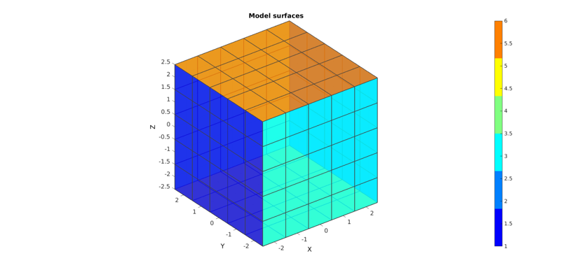
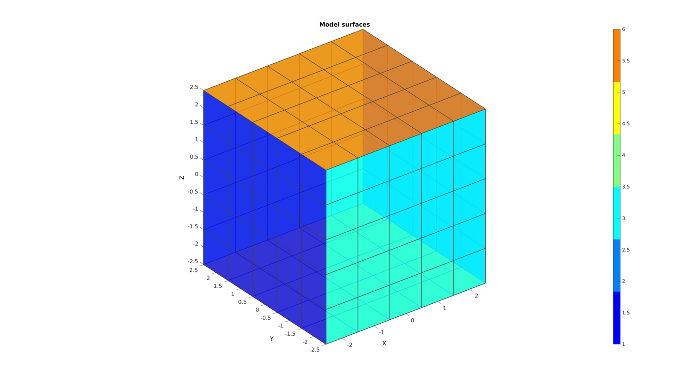
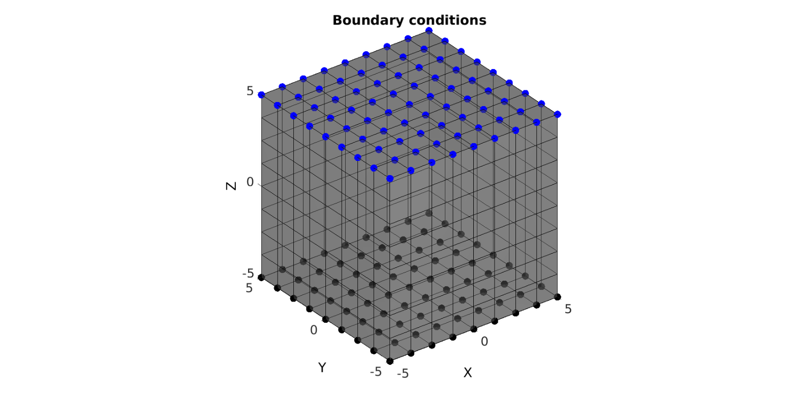
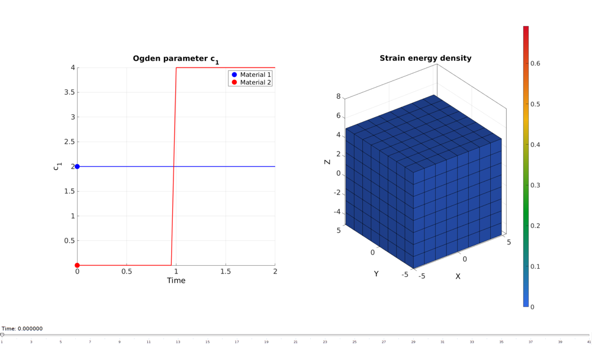

DEMO_FEBio_cube_multi_generation
Below is a demonstration for: 1) The creation of an FEBio model whereby multigeration materials are used to create a preload affect. 2) A cube is loaded in tension and relaxed back while in the deformed state the multigeneration material's stiffness is "switched on"
Contents
clear; close all; clc;
Plot settings
fontSize=20; faceAlpha1=0.5; faceAlpha2=1; edgeColor=0.25*ones(1,3); edgeWidth=1.5; markerSize=40; lineWidth=3; plotColors=gjet(4);
Control parameters
% path names defaultFolder = fileparts(fileparts(mfilename('fullpath'))); savePath=fullfile(defaultFolder,'data','temp'); modelNameEnd='tempModel'; modelName=fullfile(savePath,modelNameEnd); %FEA control numSteps=10; %Specifying dimensions and number of elements sampleWidth=10; sampleThickness=sampleWidth; sampleHeight=sampleWidth; pointSpacings=10/8*ones(1,3); initialArea=sampleWidth*sampleThickness; numElementsWidth=round(sampleWidth/pointSpacings(1)); numElementsThickness=round(sampleThickness/pointSpacings(2)); numElementsHeight=round(sampleHeight/pointSpacings(3)); stretchLoad=1.3; displacementMagnitude=(stretchLoad*sampleHeight)-sampleHeight; %Material parameters k_factor=50; c1=2; k=c1*k_factor; c1_g=[c1/1000 c1*2]; k_g=c1_g*k_factor; % FEA control settings numTimeSteps=20; %Number of time steps desired max_refs=25; %Max reforms max_ups=0; %Set to zero to use full-Newton iterations opt_iter=10; %Optimum number of iterations max_retries=5; %Maximum number of retires dtmin=(1/numTimeSteps)/100; %Minimum time step size dtmax=1/numTimeSteps; %Maximum time step size
CREATING MESHED BOX
%Create box 1 boxDim=[sampleWidth sampleThickness sampleHeight]; %Dimensions boxEl=[numElementsWidth numElementsThickness numElementsHeight]; %Number of elements [box1]=hexMeshBox(boxDim,boxEl); E=box1.E; V=box1.V; Fb=box1.Fb; faceBoundaryMarker=box1.faceBoundaryMarker;
Plotting boundary surfaces
cFigure; title('Model surfaces','FontSize',fontSize); hold on; gpatch(Fb,V,faceBoundaryMarker,'k',faceAlpha2,edgeWidth); colormap(gjet(6)); icolorbar; axisGeom(gca,fontSize); camlight headlight; drawnow;
Splitting mesh into 2 material groups
X=V(:,1); Y=V(:,2); Z=V(:,3); VE=[mean(X(E),2) mean(Y(E),2) mean(Z(E),2)]; logicMaterial_1=VE(:,1)<0; elementMaterialIndices=logicMaterial_1+1; %Reoder E to cope with FEBio bug in relation to element ordering and %multiple material sets E=[E(elementMaterialIndices==1,:); E(elementMaterialIndices==2,:);]; elementMaterialIndices=[elementMaterialIndices(elementMaterialIndices==1,:); elementMaterialIndices(elementMaterialIndices==2,:);]; %Creating faces for plotting [F,CF]=element2patch(E,elementMaterialIndices);
Plotting model
cFigure; title('Material regions','FontSize',fontSize); hold on; gpatch(F,V,CF,'k',0.5); colormap(gjet(6)); icolorbar; axisGeom(gca,fontSize); camlight headlight; drawnow;
DEFINE BC's
%Define supported node sets logicFace=faceBoundaryMarker==5; Fr=Fb(logicFace,:); bcSupportList=unique(Fr(:)); %Prescribed displacement nodes logicPrescribe=faceBoundaryMarker==6; Fr=Fb(logicPrescribe,:); bcPrescribeList=unique(Fr(:)); bcPrescribeMagnitudes=displacementMagnitude(ones(1,numel(bcPrescribeList)),:);
Visualize BC's
cFigure; title('Boundary conditions','FontSize',fontSize); hold on; gpatch(Fb,V,0.5*ones(1,3),'k',faceAlpha1); plotV(V(bcSupportList,:),'k.','MarkerSize',markerSize); plotV(V(bcPrescribeList,:),'b.','MarkerSize',markerSize); axisGeom(gca,fontSize); camlight headlight; drawnow;
CONSTRUCTING FEB MODEL
FEB_struct.febio_spec.version='2.0'; FEB_struct.Module.Type='solid'; % Defining file names FEB_struct.run_filename=[modelName,'.feb']; %FEB file name FEB_struct.run_logname=[modelName,'.txt']; %FEBio log file name febMatID=elementMaterialIndices; febMatID(elementMaterialIndices==-2)=1; febMatID(elementMaterialIndices==-3)=2; %Creating FEB_struct FEB_struct.Geometry.Nodes=V; FEB_struct.Geometry.Elements={E}; %The element sets FEB_struct.Geometry.ElementType={'hex8'}; %The element types FEB_struct.Geometry.ElementMat={febMatID}; FEB_struct.Geometry.ElementsPartName={'Cube'}; % DEFINING MATERIALS %Material 1 deformable block FEB_struct.Materials{1}.Type='Ogden unconstrained'; FEB_struct.Materials{1}.Name='cube_mat'; FEB_struct.Materials{1}.Properties={'c1','m1','c2','m2','cp'}; FEB_struct.Materials{1}.Values={c1,2,c1,-2,k}; %Material 2 Homes-Mow compressible multigeneration FEB_struct.Materials{2}.Type='multigeneration'; FEB_struct.Materials{2}.Name='Deformable block'; FEB_struct.Materials{2}.Generation{1}.Solid{1}.Type='Ogden unconstrained'; FEB_struct.Materials{2}.Generation{1}.Solid{1}.Properties={'c1','m1','c2','m2','cp'}; FEB_struct.Materials{2}.Generation{1}.Solid{1}.Values={c1_g(1),2,c1_g(1),-2,k_g(1)}; FEB_struct.Materials{2}.Generation{1}.Properties={'start_time'}; FEB_struct.Materials{2}.Generation{1}.Values={0}; FEB_struct.Materials{2}.Generation{2}.Solid{1}.Type='Ogden unconstrained'; FEB_struct.Materials{2}.Generation{2}.Solid{1}.Properties={'c1','m1','c2','m2','cp'}; FEB_struct.Materials{2}.Generation{2}.Solid{1}.Values={c1_g(2),2,c1_g(2),-2,k_g(2)}; FEB_struct.Materials{2}.Generation{2}.Properties={'start_time'}; FEB_struct.Materials{2}.Generation{2}.Values={1}; %Step specific control sections FEB_struct.Step{1}.Control.AnalysisType='static'; FEB_struct.Step{1}.Control.Properties={'time_steps','step_size',... 'max_refs','max_ups',... 'dtol','etol','rtol','lstol'}; FEB_struct.Step{1}.Control.Values={numTimeSteps,1/numTimeSteps,... max_refs,max_ups,... 0.001,0.01,0,0.9}; FEB_struct.Step{1}.Control.TimeStepperProperties={'dtmin','dtmax','max_retries','opt_iter'}; FEB_struct.Step{1}.Control.TimeStepperValues={dtmin,dtmax,max_retries,opt_iter}; FEB_struct.Step{2}=FEB_struct.Step{1}; %Defining node sets FEB_struct.Geometry.NodeSet{1}.Set=bcSupportList; FEB_struct.Geometry.NodeSet{1}.Name='bcSupportList'; FEB_struct.Geometry.NodeSet{2}.Set=bcPrescribeList; FEB_struct.Geometry.NodeSet{2}.Name='bcPrescribeList'; %Adding BC information FEB_struct.Boundary.Fix{1}.bc='x'; FEB_struct.Boundary.Fix{1}.SetName=FEB_struct.Geometry.NodeSet{1}.Name; FEB_struct.Boundary.Fix{2}.bc='y'; FEB_struct.Boundary.Fix{2}.SetName=FEB_struct.Geometry.NodeSet{1}.Name; FEB_struct.Boundary.Fix{3}.bc='z'; FEB_struct.Boundary.Fix{3}.SetName=FEB_struct.Geometry.NodeSet{1}.Name; %Step specific BC's FEB_struct.Boundary.Prescribe{1}.Set=bcPrescribeList; FEB_struct.Boundary.Prescribe{1}.bc='z'; FEB_struct.Boundary.Prescribe{1}.lc=1; FEB_struct.Boundary.Prescribe{1}.nodeScale=displacementMagnitude(ones(numel(bcPrescribeList),1),1); FEB_struct.Boundary.Prescribe{1}.Type='relative'; FEB_struct.Boundary.Prescribe{2}.Set=bcPrescribeList; FEB_struct.Boundary.Prescribe{2}.bc='x'; FEB_struct.Boundary.Prescribe{2}.lc=1; FEB_struct.Boundary.Prescribe{2}.nodeScale=zeros(numel(bcPrescribeList),1); FEB_struct.Boundary.Prescribe{2}.Type='relative'; FEB_struct.Boundary.Prescribe{3}.Set=bcPrescribeList; FEB_struct.Boundary.Prescribe{3}.bc='y'; FEB_struct.Boundary.Prescribe{3}.lc=1; FEB_struct.Boundary.Prescribe{3}.nodeScale=zeros(numel(bcPrescribeList),1); FEB_struct.Boundary.Prescribe{3}.Type='relative'; %Load curves FEB_struct.LoadData.LoadCurves.id=1; FEB_struct.LoadData.LoadCurves.type={'linear'}; FEB_struct.LoadData.LoadCurves.loadPoints={[0 0;1 1; 2 0;];}; %Adding output requests FEB_struct.Output.VarTypes={'displacement','stress','relative volume'}; %Specify log file output run_node_output_name=[modelNameEnd,'_node_out.txt']; run_element_output_name=[modelNameEnd,'_element_out.txt']; FEB_struct.run_output_names={run_node_output_name,run_element_output_name}; FEB_struct.output_types={'node_data','element_data'}; FEB_struct.data_types={'ux;uy;uz','sed'};
SAVING .FEB FILE
FEB_struct.disp_opt=0; %Display waitbars option
febStruct2febFile(FEB_struct);
Warning: febStruct2febFile is depricated and will be removed in future releases. Update your codes to use febioStruct2xml, see HELP_febioStruct2xml (furthermore febio_spec version 2.5 is recommended) %%%%%%%%%%%%%%%%%%%%%%%%%%%%%%%%%%%%%%%%%%%%% --- Writing FEBio XML object --- 18-Feb-2018 16:19:10 Using febio_spec: 2.0 Adding Module level Adding Material level Adding Geometry level ----> Adding node field ----> Adding element field ----> Adding hex8 element entries.... ----> Adding NodeSet field Adding Boundary level ----> Defining fix type boundary conditions ----> Defining prescribe type boundary conditions Adding LoadData level ----> Defining load curves Adding Step level ----> Adding Module field ----> Adding Control field Adding Step level ----> Adding Module field ----> Adding Control field Adding Output level ----> Adding plotfile field ----> Adding logfile field Writing .feb file --- Done --- 18-Feb-2018 16:19:10
RUNNING FEBIO JOB
FEBioRunStruct.run_filename=FEB_struct.run_filename; FEBioRunStruct.run_logname=FEB_struct.run_logname; FEBioRunStruct.disp_on=1; FEBioRunStruct.disp_log_on=1; FEBioRunStruct.runMode='external';%'internal'; FEBioRunStruct.t_check=0.25; %Time for checking log file (dont set too small) FEBioRunStruct.maxtpi=1e99; %Max analysis time FEBioRunStruct.maxLogCheckTime=3; %Max log file checking time [runFlag]=runMonitorFEBio(FEBioRunStruct);%START FEBio NOW!!!!!!!!
%%%%%%%%%%%%%%%%%%%%%%%%%%%%%%%%%%%%%%%%%%%%% --- STARTING FEBIO JOB --- 18-Feb-2018 16:19:10 Waiting for log file... Proceeding to check log file...18-Feb-2018 16:19:11 ------- converged at time : 0.05 ------- converged at time : 0.1 ------- converged at time : 0.15 ------- converged at time : 0.2 ------- converged at time : 0.25 ------- converged at time : 0.3 ------- converged at time : 0.35 ------- converged at time : 0.4 ------- converged at time : 0.45 ------- converged at time : 0.5 ------- converged at time : 0.55 ------- converged at time : 0.6 ------- converged at time : 0.65 ------- converged at time : 0.7 ------- converged at time : 0.75 ------- converged at time : 0.8 ------- converged at time : 0.85 ------- converged at time : 0.9 ------- converged at time : 0.95 ------- converged at time : 1 ------- converged at time : 1.05 ------- converged at time : 1.1 ------- converged at time : 1.15 ------- converged at time : 1.2 ------- converged at time : 1.25 ------- converged at time : 1.3 ------- converged at time : 1.35 ------- converged at time : 1.4 ------- converged at time : 1.45 ------- converged at time : 1.5 ------- converged at time : 1.55 ------- converged at time : 1.6 ------- converged at time : 1.65 ------- converged at time : 1.7 ------- converged at time : 1.75 ------- converged at time : 1.8 ------- converged at time : 1.85 ------- converged at time : 1.9 ------- converged at time : 1.95 ------- converged at time : 2 --- Done --- 18-Feb-2018 16:19:14
if runFlag==1 %i.e. a succesful run
Importing nodal displacements from a log file
[time_mat, N_disp_mat,~]=importFEBio_logfile(fullfile(savePath,FEB_struct.run_output_names{1})); %Nodal displacements
%Remove nodal index column
N_disp_mat=N_disp_mat(:,2:end,:);
%Add initial state i.e. zero displacement
sizImport=size(N_disp_mat);
sizImport(3)=sizImport(3)+1;
N_disp_mat_n=zeros(sizImport);
N_disp_mat_n(:,:,2:end)=N_disp_mat;
N_disp_mat=N_disp_mat_n;
%Add zero time point
time_mat=[0; time_mat(:)]; %Time
Importing element stresses from a log file
[~,E_stress_mat,~]=importFEBio_logfile(fullfile(savePath,FEB_struct.run_output_names{2})); %Element stresses
%Remove nodal index column
E_stress_mat=E_stress_mat(:,2:end,:);
%Add initial state i.e. zero displacement
sizImport=size(E_stress_mat);
sizImport(3)=sizImport(3)+1;
E_stress_mat_n=zeros(sizImport);
E_stress_mat_n(:,:,2:end)=E_stress_mat;
E_stress_mat=E_stress_mat_n;
Plotting the deformed model
c1_plot=c1*ones(size(time_mat));
cg_plot=c1_g(1)*ones(size(time_mat));
cg_plot(time_mat>=1)=c1_g(2);
DN_MAG=sqrt(sum(N_disp_mat.^2,2));
DN=N_disp_mat(:,:,end);
DN_magnitude=sqrt(sum(DN(:,3).^2,2));
V_def=V+DN;
V_DEF=N_disp_mat+repmat(V,[1 1 size(N_disp_mat,3)]);
X_DEF=V_DEF(:,1,:);
Y_DEF=V_DEF(:,2,:);
Z_DEF=V_DEF(:,3,:);
[~,CF]=element2patch(E,E_stress_mat(:,:,1));
hf=cFigure;
subplot(1,2,1); hold on;
title('Ogden parameter c_1');
xlabel('Time'); ylabel('c_1');
plot(time_mat,c1_plot,'b-','lineWidth',2);
plot(time_mat,cg_plot,'r-','lineWidth',2);
hp1=plot(time_mat(1),c1_plot(1),'b.','MarkerSize',50);
hp2=plot(time_mat(1),cg_plot(1),'r.','MarkerSize',50);
legend([hp1 hp2],'Material 1','Material 2');
axis tight; axis square; set(gca,'fontsize',fontSize);
grid on;
subplot(1,2,2); hold on;
title('Strain energy density');
hp3=gpatch(F,V,CF,'k',1);
% gpatch(Fb,V,0.5*ones(1,3),'none',0.25);
colormap(gjet(250)); colorbar;
caxis([min(E_stress_mat(:)) max(E_stress_mat(:))]);
axisGeom(gca,fontSize);
axis([min(X_DEF(:)) max(X_DEF(:)) min(Y_DEF(:)) max(Y_DEF(:)) min(Z_DEF(:)) max(Z_DEF(:))]);
axis manual;
camlight headlight;
drawnow;
animStruct.Time=time_mat;
for qt=1:1:size(N_disp_mat,3)
DN=N_disp_mat(:,:,qt);
V_def=V+DN;
[~,CF]=element2patch(E,E_stress_mat(:,:,qt));
%Set entries in animation structure
animStruct.Handles{qt}=[hp3 hp3 hp1 hp1 hp2 hp2]; %Handles of objects to animate
animStruct.Props{qt}={'Vertices','CData','XData','YData','XData','YData'}; %Properties of objects to animate
animStruct.Set{qt}={V_def,CF,time_mat(qt),c1_plot(qt),time_mat(qt),cg_plot(qt)}; %Property values for to set in order to animate
end
anim8(hf,animStruct);
drawnow;
 end

GIBBON www.gibboncode.org
Kevin Mattheus Moerman, gibbon.toolbox@gmail.com
GIBBON footer text
License: https://github.com/gibbonCode/GIBBON/blob/master/LICENSE
GIBBON: The Geometry and Image-based Bioengineering add-On. A toolbox for image segmentation, image-based modeling, meshing, and finite element analysis.
Copyright (C) 2018 Kevin Mattheus Moerman
This program is free software: you can redistribute it and/or modify it under the terms of the GNU General Public License as published by the Free Software Foundation, either version 3 of the License, or (at your option) any later version.
This program is distributed in the hope that it will be useful, but WITHOUT ANY WARRANTY; without even the implied warranty of MERCHANTABILITY or FITNESS FOR A PARTICULAR PURPOSE. See the GNU General Public License for more details.
You should have received a copy of the GNU General Public License along with this program. If not, see http://www.gnu.org/licenses/.